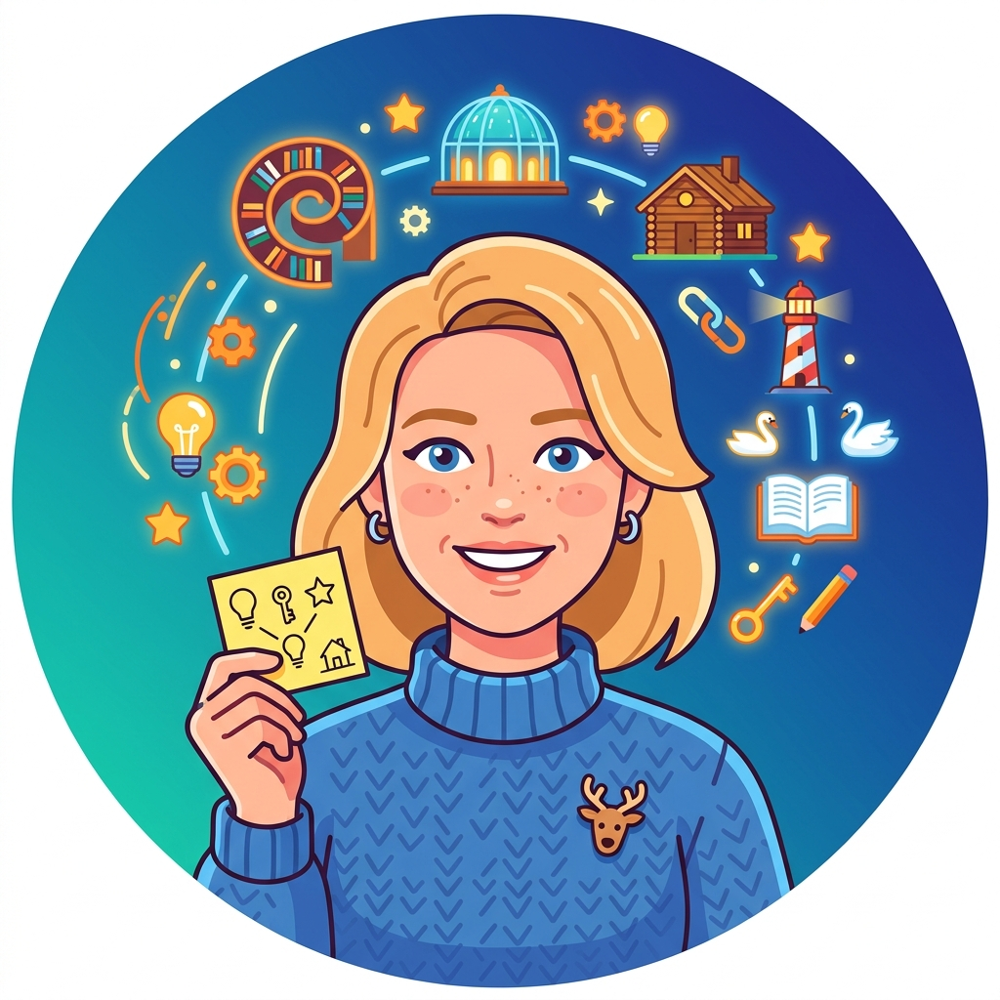

Every chapter was produced by a team of 42 specialized AI agents, each responsible for a distinct editorial function. The human authors directed strategy, validated content, and made all final decisions; these agents handled drafting, reviewing, illustrating, and quality assurance.
The agents are grouped below by function: leadership and coordination, pedagogy and learning design, content quality, style and engagement, visual and creative, and publication and QA.
Big Picture
These 42 production agents are distinct from the 42 Wisdom Council characters who provide the epigraphs. The production agents are real tools in the writing pipeline; the Wisdom Council members are fictional personas with distinct personalities.
Leadership and Coordination

#00
Chapter Lead Agent
Owns each chapter end-to-end and coordinates all other agents through the production pipeline.
#37
Chapter Controller Agent
Quality assurance orchestrator that inspects finished files, identifies gaps, and dispatches targeted requests to specialist agents.
#36
Meta Agent (Book Quality Auditor)
Reviews the entire book and identifies where other agents failed, underperformed, or missed opportunities.

#19
Structural Refactoring Architect
Reviews organization at the chapter and section level and proposes better structural arrangements.
Pedagogy and Learning Design

#01
Curriculum Alignment
Ensures each chapter serves the overall course structure, not just itself.

#02
Deep Explanation Designer
Ensures every concept is explained with depth, intuition, and justification rather than just procedure.

#03
Teaching Flow Reviewer
Thinks like an excellent lecturer, ensuring the chapter flows naturally from concept to concept.

#04
Student Advocate
Represents a capable but non-expert reader, evaluating content for clarity and effective microlearning structure.

#05
Cognitive Load Optimizer
Controls density and pacing so readers can absorb material without overload.

#06
Example and Analogy Designer
Designs concrete examples, analogies, and recurring motifs that make abstract ideas memorable.

#07
Exercise Designer
Creates practice opportunities that directly reinforce the concepts in each chapter.

#08
Code Pedagogy Engineer
Identifies where code teaches better than prose and creates technically correct, pedagogically effective examples.

#10
Misconception Analyst
Predicts misunderstandings readers are likely to have and helps prevent them proactively.

#21
Self-Containment Verifier
Ensures every chapter can be understood using only the background available in the book or clearly connected prerequisites.

#24
Aha-Moment Engineer
Finds places where one striking example, contrast, or visualization can make a concept permanently click.
#41
Hands-On Lab Designer
Designs structured, guided hands-on labs (30 to 90 minutes) that let readers build something real with each chapter's concepts.
Content Quality and Accuracy

#11
Fact Integrity Reviewer
A rigorous skeptic focused on truth and technical reliability across all claims.

#12
Terminology and Notation Keeper
Maintains consistent language, symbols, abbreviations, and naming across chapters.

#13
Cross-Reference Architect
Builds the internal link structure that turns the book into a connected learning system.

#18
Research Scientist
Surfaces deeper scientific insights, open questions, and connections to the research frontier.

#20
Content Update Scout
Looks outward to ensure the book covers current topics and does not miss major developments.
#35
Bibliography Curator
Adds comprehensive, hyperlinked bibliographies giving readers access to foundational papers, tools, and resources.
#39
Figure and Diagram Fact Checker
Verifies that every figure, diagram, SVG, and visual element is factually correct and properly captioned.
Style, Voice, and Engagement

#14
Narrative Continuity Editor
Ensures each chapter reads as one coherent story rather than a stack of disconnected sections.

#15
Style and Voice Editor
Maintains a consistent voice and reading experience across all content.

#16
Engagement Designer
Ensures every chapter is lively, memorable, and pleasant to read without losing seriousness.

#17
Senior Developmental Editor
Acts like a highly experienced developmental editor from a top educational publishing house.
#22
Opening and Hook Designer
Designs chapter titles, openings, and framing devices that make readers feel the content is important and worth reading.

#27
Memorability Designer
Adds repeated patterns, mnemonics, memorable phrases, and recurring contrasts for long-term retention.
#28
Skeptical Reader Agent
Challenges whether content is actually impressive and distinctive, flagging anything that feels generic or forgettable.
#29
Prose Clarity Editor
Rewrites dense or technical passages into simpler, more direct language without losing correctness.

#30
Readability and Pacing Editor
Restructures long explanations into smaller reading units and detects where reader attention drops.
#32
Epigraph Writer
Crafts humorous, witty opening quotes for each chapter using the Wisdom Council characters.
#34
Fun Injector
Injects fun, humorous remarks, witty insights, and playful analogies to make reading genuinely enjoyable.
Visual and Creative

#09
Visual Learning Designer
Finds places where visuals improve understanding and produces SVG diagrams, generated images, or Python-rendered figures.
#25
Visual Identity Director
Creates a distinctive look through recurring figure styles, callout types, icon systems, and branded visual motifs.
#26
Demo and Simulation Designer
Proposes interactive demos, tiny experiments, notebooks, and visual simulations that make ideas tangible.
#31
Illustrator Agent
Creates humorous, pedagogically useful illustrations using the Gemini image generation API and embeds them into chapters.

#23
Project Catalyst Designer
Turns chapter material into exciting project ideas and mini-builds that make the content feel action-oriented.
#33
Application Example Designer
Inserts short practical example boxes that ground abstract concepts in realistic mini-stories from industry practice.
Publication and Quality Assurance
#38
Publication Quality Assurance Agent
Final gatekeeper that verifies every page renders correctly, looks professional, and contains no visual or structural errors.

#40
Code Fragment Caption and Reference Agent
Ensures every code block has a properly numbered caption and is referenced in the surrounding prose.